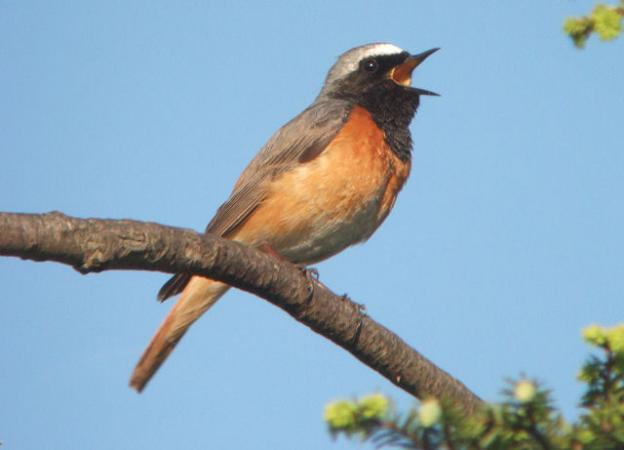
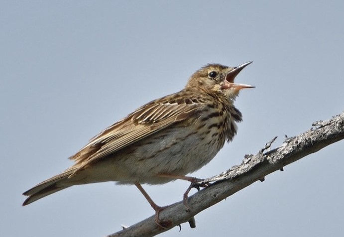

9 Vögel
9.1 Einleitung Vögel
Besonderes Augenmerk wurde auf jene Vogelarten gelegt, die in der Schweiz selten sind (NT, VU usw.) sowie auf jene, die am ehesten von den Wald-Auflichtungen bzw. den ökologischen Aufwertungen profitieren dürften. Es handelt sich um folgende Zielarten:
Baumpieper (NT)
Kuckuck (NT)
Wespenbussard (NT)
Gartenrotschwanz (NT)
Haselhuhn (NT)
Das Birkhuhn (ebenfalls eine NT-Art) brütet erfahrungsgemäss nicht im näheren Umfeld von Ces, sondern im Bereich der höher liegenden Alpe Sponda; es wurde daher nicht in die Liste der Zielarten aufgenommen.
Erfreulich war der Fund von mindestens 3 singenden Baumpiepern. Ebenfalls bemerkenswert ist die Brut des Gartenrotschwanzes am Rand des Maiensässes – nicht bekannt ist ob bzw. wie viele Jungvögel im 2024 ausgeflogen sind. Vom Kuckuck konnten 1-2 Sänger festgestellt werden. Eine weitere seltene Art – der Wespenbussard hat vermutlich auch im Projektperimeters oder in unmittelbarer Nähe gebrütet; es ist zu erwarten, dass die Art ebenfalls von den im Rahmen des LSA-Projektes umgesetzten Massnahmen profitieren wird.
Besonders die grossflächigen Wald-Auflichtungen dürften sich positiv auf die Bestände der Zielarten auswirken. Weil dadurch mehr Licht auf den Boden kommt, kann sich im Projektperimeter eine blüten- und artenreichere Vegetation entwickeln. Das Sammeln von autochtonem Saatgut und die anschliessende Ansaat in den aufgelichteten Zonen sowie die gezielte Bekämpfung von jungen Gehölzen muss im Rahmen eines Folgeprojektes noch intensiviert werden.
9.2 Gartenrotschwanz

Im Juli 2024 hat der Gartenrotschwanz (im Bild das Männchen) erfolgreich in Ces gebrütet. Diese Art ist besonders im Mittelland in den letzten Jahren sehr selten geworden. Die Art brütet in Hohlräumen und in Steinhäusern. Da die Art sich von Insekten ernährt, kommen ihr die ökologischen Aufwertungsmassnahmen.
9.3 Baumpieper

Der Baumpieper gehört zu den 50 Prioritätsarten der Schweiz. Er lebt in Mooren mit einzelnen Bäumen oder in lichten Baumbeständen. Besonders auffällig ist sein Singflug: das Männchen steigt in die Höhe und lässt ähnlich wie ein Fallschirm auf einen Baum sinken.
9.4 Artenliste
Alpenmeise, Bachstelze, Baumpieper (NT), Birkhuhn (NT), Blaumeise, Buchfink, Buntspecht, Eichelhäher, Fichtenkreuzschnabel, Gartenrotschwanz (NT), Gebirgsstelze, Gimpel, Haubenmeise, Hausrotschwanz, Heckenbraunelle, Kohlmeise, Kolkrabe, Misteldrossel, Mönchsgrasmücke, Rotkehlchen, Schwarzspecht, Singdrossel, Steinadler (NT), Stieglitz, Tannenhäher, Tannenmeise, Wasseramsel, Wespenbussard (NT), Wintergoldhähnchen, Zaunkönig